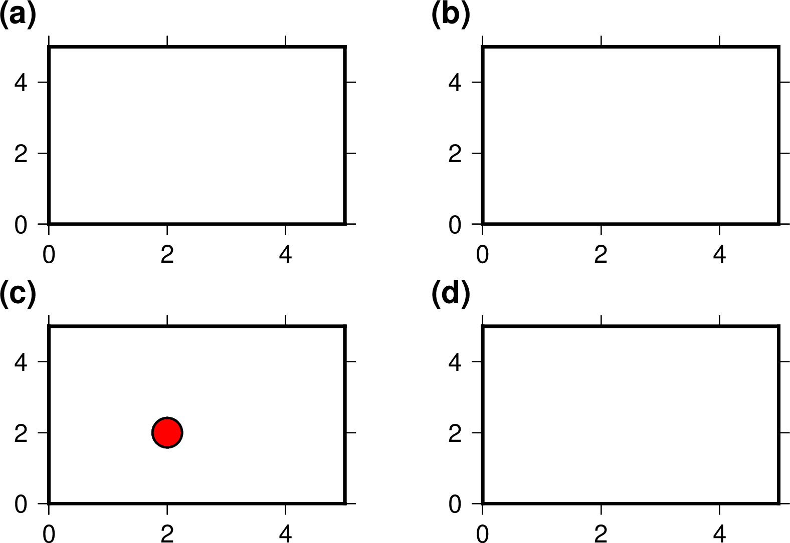

-c 選項¶
-c 選項用於控制繪圖命令在哪一個子圖中進行繪製，該選項僅可在 子圖模式 下才能使用。所有繪圖模塊均可以使用該選項。該選項使得當前及之後的一系列繪圖命令均在指定的子圖中繪製，直到某個繪圖命令再次使用該選項爲止。
-c 選項的語法爲：
-c[row,col |index]
其主要有三種用法:
- 使用 -c 則GMT會自動激活“下一個”子圖面板
- -crow,col 表示當前及接下來的繪圖命令在第 row 行、第 col 列子圖中繪製
- -cindex 當前及接下來的繪圖命名在第 index 個子圖內進行
需要注意，row、col、index 均從0開始起算。
以下示例展示了該選項的基本用法，其等效於在繪圖命令前使用 gmt subplot set 命令。
gmt begin subplot pdf,png
gmt set FONT_TAG 15p,1
gmt subplot begin 2x2 -Fs5c/3c -A'(a)'+JTL+o0.2c/0.4c -M0.5c/0.2c -R0/5/0/5
gmt basemap -Ba -BWSen -c
gmt basemap -Ba -BWSen -c
gmt basemap -Ba -BWSen -c
# 下面的命令未使用 -c 選項，但依然在2行1列子圖中繪製
echo 2 2 | gmt plot -Sc0.5c -Gred -W1p
gmt basemap -Ba -BWSen -c
gmt subplot end
gmt end

關於子圖模式的更多細節，見 子圖模式 一節。